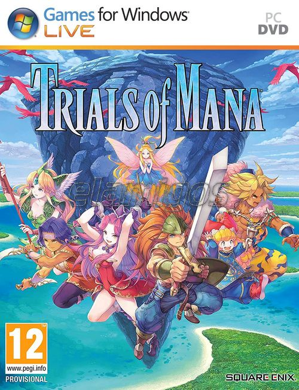

Trials of Mana 15.1 GB
Género: RPG de acción
Trials of Mana es la versión moderna del tercer juego de la imprescindible
serie Mana. El juego, publicado originalmente en Japón como Seiken Densetsu
3, se ha vuelto a crear desde cero, esta vez en 3D.